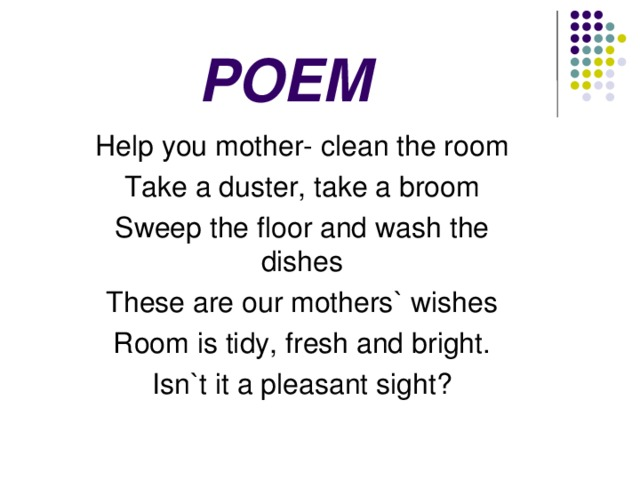

# AnEssay
My first web page.........
He had a hearing fault,
Here you can see the first line of the poem
- When I dragged the rotten log
- From the Bottom of the pool,
- To dry some more. Late that night,
- After reading for hours,
- While moths rattled at the lamp
- It seemed heavy as stone.

a near ache
Here is the second line of the poem
| Poem 1, Life 1 |
Poem 2, Life 2 |
Poem 3, Life 3 |
| Poem 2, Life 1 |
Poem 2, Life 2 |
Poem 2, Life 3 |
- For a month, and then chopped it
- Into sections, and split them
- For kindling, and spread them out
to go to the linked page, go here
go to the list
is that what you said?
Here is the third line of the poem
he lost his left foot
Obviously, the fourth line
they walked on the right side
Almost the last one
the good one
Finally, the last one is here